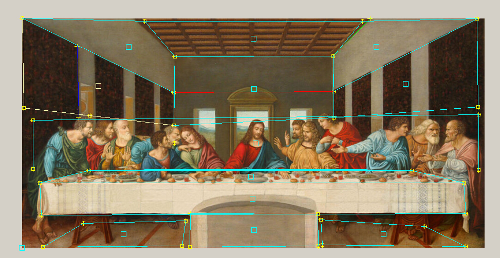
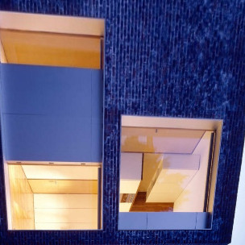
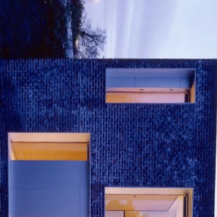

CSE559 COMPUTER VISION
PROJECT 4: SINGLE VIEW MODELING
Ding YiHeng
1.Source Image:

Boyd_Cody_Architects___Courtesy_of_Boyd_Cody_Architects from google
The second one is the the last supper
2.Screen Shot of the UI program



3.The way to make 3D model
1. use the sameZplane function and oringinal point to get all the ground point 3d position

2. use ground points and SameXY function to calculate the points above each point

3. and then draw the polygon as the last image in last section
notice:
the onlt point we need to know the position is the original point which
in the red circle in the first image in this section
And for the last supper, all the process, follow the arrow to calculate all the position.
4.the Still image


5.Texture image


the rest is in the artifact folder result1
the rest is in the artifact folder result2
6.Unwarpped Image:
Because
my mesh didn't use the sweep, but I did implement it, so I apply the XZ
and Sweep part to picture "bigroom" and show the image below
,which is of course different from above
I have no idea why
the program crash when apply it to my own image but okay with the
bigroom, I didn't change the code about unwarp, and the sweep and xz
rectangle part works well , so I don't know where is the problem.
7.Extra credit
(1).camera position